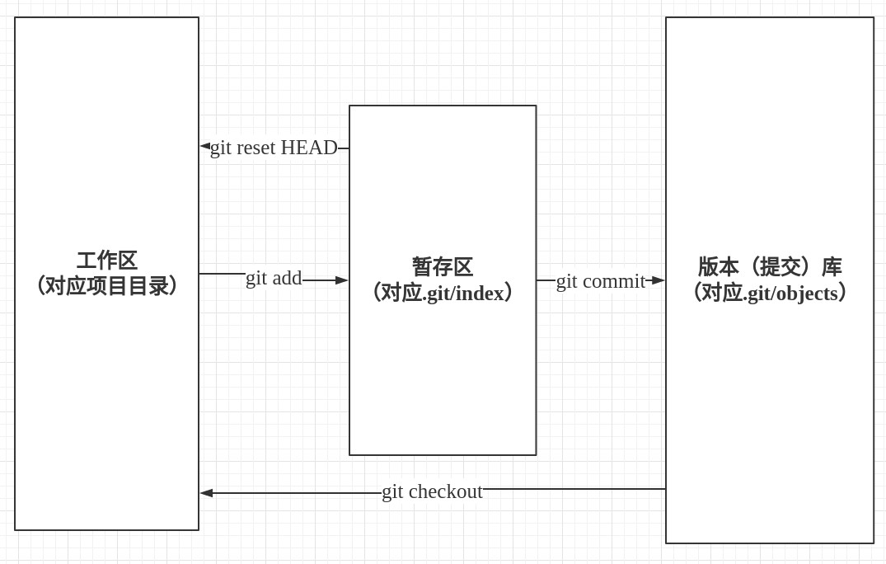
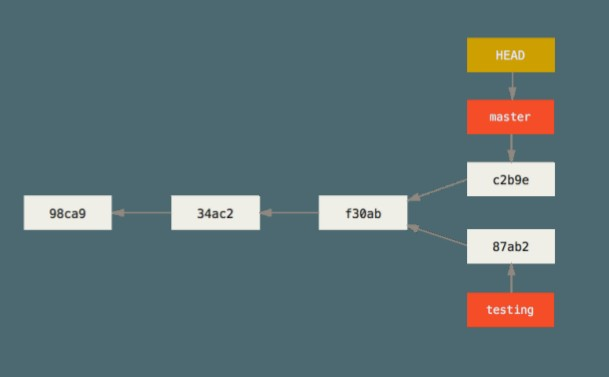
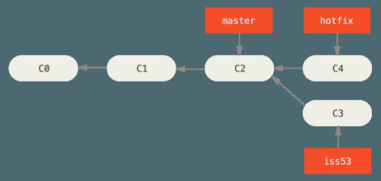
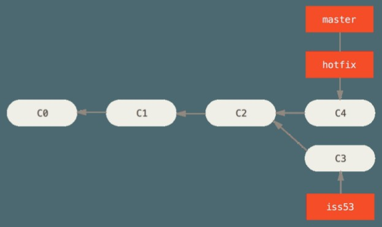
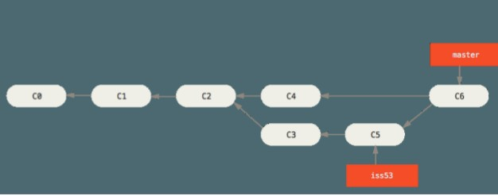

git
Table of Contents
1 版本管理工具常用功能
版本管理工具最常用的功能包括几个方面:
- 建立版本库
- 以便将项目的每个版本都保存下来
- 和版本库交互
- 向版本库中添加新版本(提交)
- 从版本库中取出某个历史版本(检出)
- 查看历史记录
- 比如通过历史查找某个文件都被谁修改过
- 和其他用户共享彼此修改的内容
注意上面说的版本不是指软件发布版本,而是指任一一次被记入历史的改动。 下文中的提交和版本都是指 “一次被记入历史的改动”。
2 Git 实现
这里说明Git是如何提供上述功能的。
2.1 建立版本(提交)库
执行git init或 git clone进行初始化时, Git会在项目根目录创建版本( 提交)数据库: 项目根目录下的.git/objects。
2.2 和版本库交互

2.2.1 提交
git commit 会创建一个包含修改文件/修改人/修改时间等内 容的新提交。新提交的名字是一串hash码,保存在版本库(.git/objects) 中。
2.2.2 检出
git checkout 会将指定的某次历史提交的内容从版本库中移出到工作区。
2.2.3 暂存区
暂存区只是一个简单的标记区, 对应.git/index。 git add 会将指定的文件 放入暂存区并随下一次提交保存到版本库中,而未标记的文件会继续留在工作 区。暂存区的意义是让用户可以只提交部分改动。
2.3 查看历史记录
新提交会把上一次提交作为父提交,所以从当前提交就可以追溯到所有的提 交历史。 git log命令会展示从指定提交开始的历史记录。
2.4 分支
2.4.1 分支概述
我们已经知道git用提交来表示用户的一次修改,包括修改文件/修改时间/ 修改人等;同时提交之间的父子关系构成了版本历史。 但提交是一串hash码,如e4fd230d7144a8d6fd46536b7fb615bb3b2726da,不 方便记忆和使用, 为此git引入了由用户自己命名的分支。 分支就是指向提交 的指针,这样通过分支的名字就可以引用提交了。 如.git/refs/heads/master 中存储的ecf1baff68bc35a49c4906a127f580f40d936e93 就是一次提交的名字。
如果我们粗略的把提交之间的父子关系看做单链表,分支的另一个作用就是作 为单链表的头保存我们的提交。 当我们执行commit时,git会自动把新创建的 提交保存到当前所在分支中，如.git/refs/heads/master。如 果.git/refs/heads/master损坏了,我们就会丢失提交(单链表的头丢失了,我 们就没办法引用单链表了)。如下图:

master分支和testing分支分别指向不同的commit,他们相互独立。图中的 HEAD对应.git/HEAD文件,用于保存工作区所在的提交。图中HEAD指向 master说明我们当前所在的分支是master,也就是我们的工作区对应的 是master分支指向的提交。
2.4.2 Git工作流程
由于分支作为单链表头可以互不影响的保存我们的提交, 所以我们可以在不 同的分支上进行不同的工作。注意下图中我们的修改C4被保存在了hotfix分 支，如果此时我们删除hotfix分支，我们就会丢失C4中的修改。

我们分别在hotfix和issue53上做不同的工作，最后再将他们分别合并到 master上。合并hotfix如下图:

合并issue53 如下图:

2.4.3 分支常用命令
- 分支创建
git branch hotfix release_1.0 git checkout -b hotfix release_1.0
分支做为"链表头"也用于建立独立的空间, 比如上述命令以
release_1.0为基 准建立了一个新的hotfix分支。 - 分支切换
git checkout testing
git会把testing分支指向的版本对应的内容覆盖到工作区中, 并将 HEAD(.git/HEAD) 指向testing。 由于涉及到内容覆盖, 如果覆盖会导致用户 工作区中的修改丢失, 出于保护git会拒绝切换。
- 分支合并
git merge hotfix
上面的命令将hotfix中的内容合并到当前分支。
2.4.4 游离态
当执行git checkout + 某次提交的hash码时, 就会进入游离态。 当执行commit时, 我们必须在某个分支上, 因为需要分支帮我们保存 "单链表"的头。 游离态的含义就是不在任何一个分支上, 所以也就不能执行提交。 如果执行git checkout + 某次提交的hash码时, git自动创建一个分支, 那 就没有必要引入游离态了。 但是这样每次checkout都会创建一个不必要的新 分支。 所以游离态就是git一个合理的默认值而已(默认不自动创建分支)。
2.5 和其他用户共享彼此修改的内容
上面的内容都是在操作用户本地的版本库,和其他用户协作时,就需要和远 程仓库交互。也就是说大家通过一个公共的远程仓库来交换彼此的数据。
2.5.1 添加远程仓库
git remote add origin git@host/xx.git
2.5.2 拉取远程仓库的内容
git fetch origin
这个命令会修改版本库(.git/object/)但不会修改工作区。
2.5.3 检出远程分支
git checkout -b dev origin/dev
git fetch 将远程仓库的修改内容放到.git/object中，git checkout负责 将.git/object中的内容放入工作区，这样我们就可以看到别人的修改了。
2.5.4 将自己的修改分享到远程仓库
git push
2.5.5 分支track
git branch --set-upstream-to origin/dev
通过–set-upstream-to 选项可以建立本地分支和远程分支的对应关系 git checkout -b issue31 origin/issue31 从远程分支检出本地分支时, git会自动建立track关系
2.5.6 git pull
git pull命令会拉取远程仓库的内容,并将当前分支track的远程分支merge到 当前分支。也就是
git fetch origin git merge origin/<current branch>